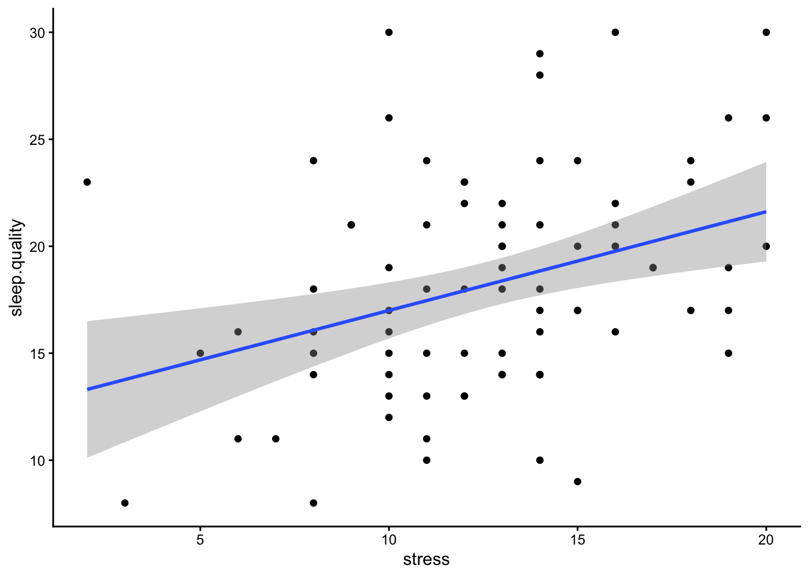
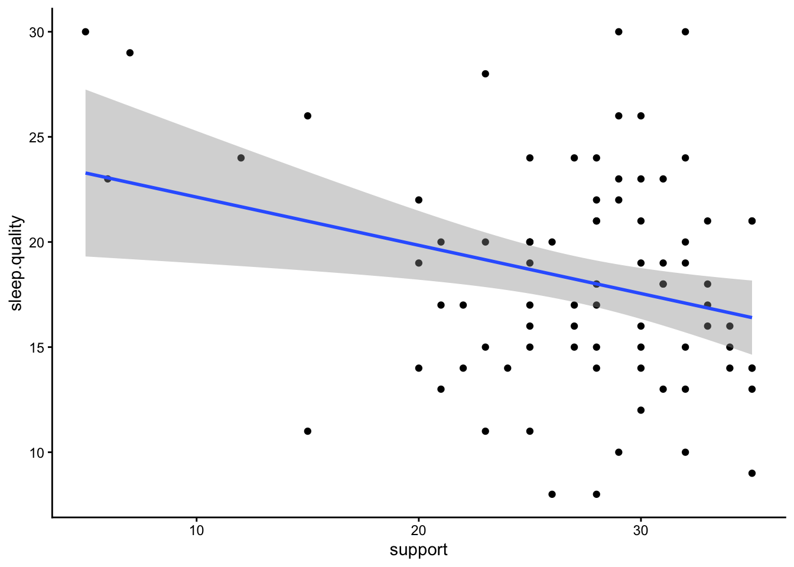

Content
Before we begin…
We will be using these packages in this demonstration. This is the
first time we have encountered the lm.beta package, so make
sure to install it before loading the packages.
library(tidyverse)
library(lm.beta)Correlation
As discussed in the lecture, a correlation assesses the relationship between two continuous variables. In the example below, we will assess the association between stress levels and sleep quality. For more detail on the Perceived Stress Scale, click here. For more detail on the sleep quality scale, click here. Note that we have reversed-coded the sleep quality items so that higher scores mean higher sleep quality. Again, we will only be using a subset of the items from each scale.
Remember, whenever we analyse data, we will roughly be following this procedure:
- Clean the data for analysis.
- Visualise the data
- Run statistical test
- Write-up analysis.
1. Clean the data for analysis.
First, we must calculate the perceived stress and sleep quality
variables that we will use in the correlation (summing the items for
both scales), and then select the variables in the data.frame. Similar
to previous weeks, we use the mutate() function to
calculate a new variable from ones that already exist. There’s two ways
we can do this - we can add all the relevant variables, or we can use
the code below to add all the variables that start with the same word to
avoid typing out all the variable names (handy for long scales). We will
also use the select() function to only include the
variables relevant to our analysis.
Note, larger scores on the Perceived Stress Scale and the Sleep Quality Scale equates to greater perceived stress and poorer sleep quality respectively.
data1.clean <- data %>%
mutate(stress = stress.1 + stress.2 + stress.3 + stress.4 + stress.5, #Method 1
sleep.quality = rowSums(select(.,starts_with("sleep")))) %>% #Method 2
dplyr::select(student.no,stress,sleep.quality)2. Visualise data
Scatterplot
Scatterplots are the best way to visualise correlations, as it allows you to see the individual data points and whether you can have confidence in your correlation coefficient. For instance, it can tell you if your significant correlation is due to a small number of outliers.
Usually in a scatterplot, each point represents a single participant, with each variable on the x- and y-axis. Technically this is interchangable, but usually your IV and DV (according to your hypothesis) would be on the x- and y-axis respectively.
In the code below, the geom_point() function adds the
points on the scatterplot. The geom_smooth() function adds
the line-of-best-fit. geom_smooth() requires the additional
‘method’ argument, which tells it what type of line you want. In this
instance, we specify “lm” to tell it we want a linear model. Note:, you
can also use geom_jitter() instead of
geom_point() to add a bit of randomness to your scatterplot
- this is useful if you have a lot of points on top of each other.
ggplot(data1.clean,aes(x = stress,y = sleep.quality)) +
geom_point() +
geom_smooth(method = "lm") +
theme_classic()
3. Run statistical test
To run the correlation, we can use the cor.test()
function. Similar to analyses we have covered previously, this function
requires a formula, and a data.frame.
Normally, the formula has the form: DV ~ IV. However,
for a correlation, given that there are no IVs/DVs per se (i.e., we
cannot infer causality - does decreased sleep quality lead to higher
perceived stress, or does higher perceived stress lead to decreased
sleep quality?), this is reflected in the formula for a correlation,
where both variables are on the right side of the ~
symbol:
~ variable1 + variable2
Below is the code and output from a correlation conducted in R.
cor.test(~ stress + sleep.quality,data = data1.clean)##
## Pearson's product-moment correlation
##
## data: stress and sleep.quality
## t = 3.9742, df = 78, p-value = 0.0001565
## alternative hypothesis: true correlation is not equal to 0
## 95 percent confidence interval:
## 0.2095286 0.5779610
## sample estimates:
## cor
## 0.4103541The key parts of the output that we are interested in are:
- The r-statistic - this is specified at the bottom of the output under ‘cor’, and equals 0.41 above.
- The p-value - this tells you whether the test is significant or not. Above, p < .001.
- The degrees of freedom (df), which above is 78.
4. Write-up analysis.
In order to write-up a correlation in APA format, you need the following information:
- The degrees of freedom.
- The correlation coefficient (i.e., the test statistic).
- The p-value.
Here is an example of a write-up for the correlation above (can you see where each of the numbers came from in the output above?):
There was a significant, positive correlation between perceived stress and poor sleep quality, r(78) = 0.41, p < .001.
Regression with One Predictor
When running a regression with one predictor (i.e., one IV), it is usually easier to run a correlation. However, for demonstrative purposes, we are going to run the same analysis above, except using a regression function. See the results from the regression below and compare it to the results from the correlation above.
1. Clean the data for analysis.
This code is identical to the code above.
data2.clean <- data %>%
mutate(stress = stress.1 + stress.2 + stress.3 + stress.4 + stress.5, #Method 1
sleep.quality = rowSums(select(.,starts_with("sleep")))) %>% #Method 2
dplyr::select(student.no,stress,sleep.quality)2. Plot data
With only two variables (one predictor), the plot would be the same as with a correlation, so let’s skip this step as it would be identical to what we did above with the correlation.
3. Run statistical test
To run a regression, we use the lm() function, which
stands for ‘linear model’. Again, the first argument of this function is
the analysis formula, and the second is the data.frame being analysed.
For the formula, we revert back to the original form with the DV
(outcome variable) on the right of the ~ symbol, and IVs
(predictors) on the left. In order to get interpretable output from the
lm() function, we need to use the summary()
function. We can pipe the output of the former straight into the
latter.
#Unstandardised Model
model2 <- lm(sleep.quality ~ stress,data = data2.clean) %>%
summary()
model2##
## Call:
## lm(formula = sleep.quality ~ stress, data = data2.clean)
##
## Residuals:
## Min 1Q Median 3Q Max
## -13.4860 -3.8501 0.0778 3.0040 11.2187
##
## Coefficients:
## Estimate Std. Error t value Pr(>|t|)
## (Intercept) 10.7879 1.7744 6.080 4.17e-08 ***
## stress 0.5705 0.1435 3.974 0.000157 ***
## ---
## Signif. codes: 0 '***' 0.001 '**' 0.01 '*' 0.05 '.' 0.1 ' ' 1
##
## Residual standard error: 5.121 on 78 degrees of freedom
## Multiple R-squared: 0.1684, Adjusted R-squared: 0.1577
## F-statistic: 15.79 on 1 and 78 DF, p-value: 0.0001565In order to report a regression in APA format, we are required to
have standardised coefficients. To do this, we can use the
lm.beta() function from the lm.beta package. The
lm.beta() function takes the original unstandardised model
as its first argument, then returns output that includes the
standardised coefficients. The simplest way to use it is to add it to
the pipeline before the summary() function.
model2.standardised <- lm(sleep.quality ~ stress,data = data2.clean) %>%
lm.beta() %>%
summary()
model2.standardised##
## Call:
## lm(formula = sleep.quality ~ stress, data = data2.clean)
##
## Residuals:
## Min 1Q Median 3Q Max
## -13.4860 -3.8501 0.0778 3.0040 11.2187
##
## Coefficients:
## Estimate Standardized Std. Error t value Pr(>|t|)
## (Intercept) 10.7879 NA 1.7744 6.080 4.17e-08 ***
## stress 0.5705 0.4104 0.1435 3.974 0.000157 ***
## ---
## Signif. codes: 0 '***' 0.001 '**' 0.01 '*' 0.05 '.' 0.1 ' ' 1
##
## Residual standard error: 5.121 on 78 degrees of freedom
## Multiple R-squared: 0.1684, Adjusted R-squared: 0.1577
## F-statistic: 15.79 on 1 and 78 DF, p-value: 0.0001565Notice that in the summary table above, an additional column named
Standardized is added. Every time you calculate the
standardised coefficients, the estimate for the intercept will equal 0
(shown as NA in the output above). Therefore, you do not need to report
the estimated intercept when reporting standardised coefficients.
4. Write-up analysis.
Everything reported in a regression is given in the
summary() function. APA guidelines specify that
standardised coefficients (betas) should be reported. Therefore, make
sure you report the standardised model.
For the model, you need the following information:
- the R-squared statistic.
- the F-statistic and associated degrees of freedom.
- the p-value for the model.
Note, the R-squared statistic is the Multiple R-squared
stat in the output, rather than the Adjusted R-squared
stat. The latter adjusts the R-squared value to penalise models with a
large number of predictors.
For each predictor, you need the following information:
- the standardised coefficient.
- the t-statistic.
- the p-value for that coefficient.
Note, when reporting standardised coefficient, there is no need to report the estimate for the intercept (because it is always 0).
So the write-up for the regression above would look something like this below. Again, with only one predictor, the results from a regression is identical to a correlation, so you’re better off reporting it that way to avoid confusion and the extra hassle, but we will go through the write-up below just to demonstrate:
Linear regression indicated that 16.84% of variance in sleep quality could be explained by the predictor, (F(1, 78) = 15.79, p < .001). Perceived stress significantly predicted poor sleep quality (Beta = 0.41, p < .001).
For one or two predictors, it is simple enough to include the coefficients and p-value of predictors in-text like above. However, as your model becomes more complicated, it may be more useful to include a table instead. More on this later.
Regression with Multiple Predictors.
The real advantage of regression is when there is more than one predictor in the model. In the example below, we run a regression with sleep quality as the outcome variable, and perceived stress and social support as predictors. For more detail on the Perceived Social Support Scale, click here.
1. Clean the data for analysis.
First, we need to calculate the variables from each individual item. Again, this is just the sum of the items from the respective scales.
data3.clean <- data %>%
mutate(stress = stress.1 + stress.2 + stress.3 + stress.4 + stress.5,
support = support.1 + support.2 + support.3 + support.4 + support.5,
sleep.quality = sleep1 + sleep2 + sleep3 + sleep4 + sleep5 + sleep6) %>%
dplyr::select(student.no,stress,support,sleep.quality)2. Visualise data
It is difficult to plot data from a multiple regression, as, in extreme circumstances, controlling for the variance in one predictor could change the direction of relationship in another. The simplest way is to plot scatterplot for each predictor with the dependent variable separately. If plots don’t appear to map well onto the predicted model - it could indicate you have an issue with your model (e.g., multicollinearity).
ggplot(data3.clean,aes(x = stress,y = sleep.quality)) +
geom_point() +
geom_smooth(method = "lm") +
theme_classic()ggplot(data3.clean,aes(x = support,y = sleep.quality)) +
geom_point() +
geom_smooth(method = "lm") +
theme_classic()
3. Run statistical test
Again, we run the regression using the lm() function. In
order to add extra predictors to the model, we adjust the formula by
adding variables on the right side of the ~ symbol.
#Unstandardised Model
model3 <- lm(sleep.quality ~ support + stress,data = data3.clean)
summary(model3)##
## Call:
## lm(formula = sleep.quality ~ support + stress, data = data3.clean)
##
## Residuals:
## Min 1Q Median 3Q Max
## -13.3245 -3.7088 0.0786 2.8651 11.2283
##
## Coefficients:
## Estimate Std. Error t value Pr(>|t|)
## (Intercept) 11.56758 3.70387 3.123 0.002522 **
## support -0.02447 0.10187 -0.240 0.810785
## stress 0.56262 0.14808 3.799 0.000288 ***
## ---
## Signif. codes: 0 '***' 0.001 '**' 0.01 '*' 0.05 '.' 0.1 ' ' 1
##
## Residual standard error: 5.152 on 77 degrees of freedom
## Multiple R-squared: 0.169, Adjusted R-squared: 0.1474
## F-statistic: 7.83 on 2 and 77 DF, p-value: 0.0008024#Standardised Model
model3 %>%
lm.beta() %>%
summary()##
## Call:
## lm(formula = sleep.quality ~ support + stress, data = data3.clean)
##
## Residuals:
## Min 1Q Median 3Q Max
## -13.3245 -3.7088 0.0786 2.8651 11.2283
##
## Coefficients:
## Estimate Standardized Std. Error t value Pr(>|t|)
## (Intercept) 11.56758 NA 3.70387 3.123 0.002522 **
## support -0.02447 -0.02559 0.10187 -0.240 0.810785
## stress 0.56262 0.40470 0.14808 3.799 0.000288 ***
## ---
## Signif. codes: 0 '***' 0.001 '**' 0.01 '*' 0.05 '.' 0.1 ' ' 1
##
## Residual standard error: 5.152 on 77 degrees of freedom
## Multiple R-squared: 0.169, Adjusted R-squared: 0.1474
## F-statistic: 7.83 on 2 and 77 DF, p-value: 0.00080244. Write-up analysis.
Since we have numerous predictors now, it may make more sense to report the regression coefficients in a table to help with readability (though you can still report the statistics in-text if you prefer). In the write-up below, the beta, t-statistic, and p-value for each predictor is now in a table. However, when reporting regression coefficients in a table, you still need to describe the pattern of results in words.
We used multiple regression to predict sleep quality from perceived stress and social support. We found that both predictors explained 16.9% of the variance (F(2, 77) = 7.83, p < .001). Regression coefficients are reported in Table 1. Social support positively predicted poor sleep quality. There was no significant effect of perceived stress.
Table 1. Regression coefficients for linear model predicting intention to exercise.
| predictor | beta | t | p-value |
|---|---|---|---|
| Stress | -0.03 | -0.24 | 0.81 |
| Support | 0.4 | 3.8 | < .001 |